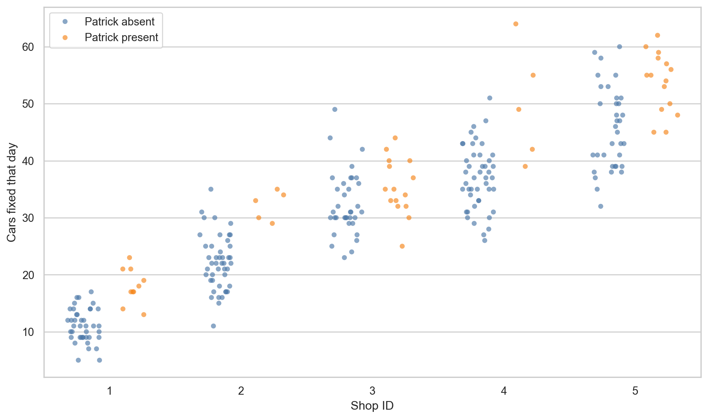
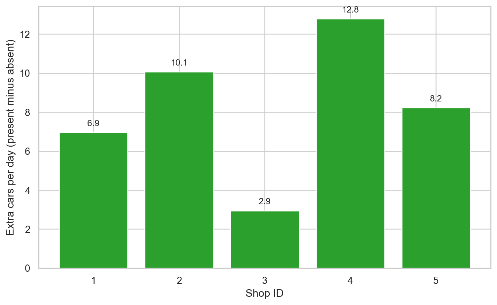
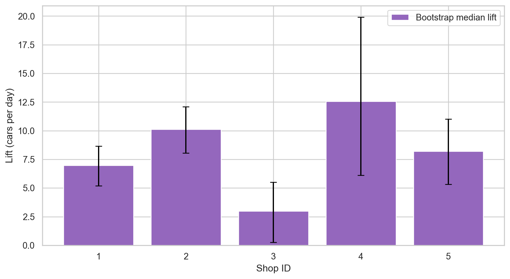
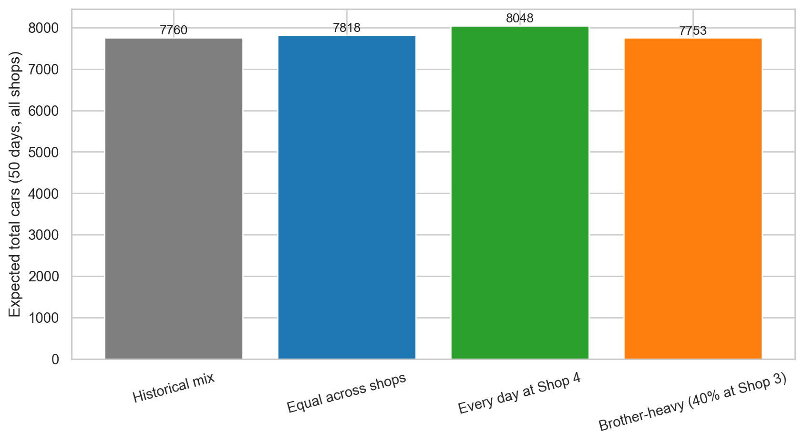

carsDF.head(10)| observation | shopID | boss | carsFixed | |
|---|---|---|---|---|
| 0 | 1 | 1 | 0 | 8 |
| 1 | 2 | 2 | 0 | 22 |
| 2 | 3 | 3 | 0 | 32 |
| 3 | 4 | 4 | 1 | 64 |
| 4 | 5 | 5 | 0 | 53 |
| 5 | 6 | 1 | 1 | 21 |
| 6 | 7 | 2 | 0 | 20 |
| 7 | 8 | 3 | 0 | 42 |
| 8 | 9 | 4 | 0 | 31 |
| 9 | 10 | 5 | 0 | 55 |
Data-Driven Scheduling for Maximum Productivity
The Core Question: When and where should Patrick schedule his presence to maximize productivity and revenue?
Key Considerations:
The problem: Patrick needs to make scheduling decisions based on data, not intuition. He needs to understand:
Why this matters: Poor scheduling decisions can lead to:
The connection: This is a real-world decision problem where data analysis can directly impact business outcomes. Your job is to make the data tell a clear, actionable story.
The dataset contains 250 observations of daily productivity across 5 shops:
carsDF.head(10)| observation | shopID | boss | carsFixed | |
|---|---|---|---|---|
| 0 | 1 | 1 | 0 | 8 |
| 1 | 2 | 2 | 0 | 22 |
| 2 | 3 | 3 | 0 | 32 |
| 3 | 4 | 4 | 1 | 64 |
| 4 | 5 | 5 | 0 | 53 |
| 5 | 6 | 1 | 1 | 21 |
| 6 | 7 | 2 | 0 | 20 |
| 7 | 8 | 3 | 0 | 42 |
| 8 | 9 | 4 | 0 | 31 |
| 9 | 10 | 5 | 0 | 55 |
Data Dictionary:
observation: Observation number (1-250)shopID: Shop identifier (1-5)boss: Binary indicator (0 = boss absent, 1 = boss present)carsFixed: Number of cars fixed that daysummary = carsDF.groupby(['shopID', 'boss'])['carsFixed'].agg(['count', 'mean', 'std', 'min', 'max']).round(2)
summary| count | mean | std | min | max | ||
|---|---|---|---|---|---|---|
| shopID | boss | |||||
| 1 | 0 | 40 | 11.05 | 2.93 | 5 | 17 |
| 1 | 10 | 18.00 | 3.13 | 13 | 23 | |
| 2 | 0 | 45 | 22.13 | 4.82 | 11 | 35 |
| 1 | 5 | 32.20 | 2.59 | 29 | 35 | |
| 3 | 0 | 35 | 32.46 | 5.59 | 23 | 49 |
| 1 | 15 | 35.40 | 5.00 | 25 | 44 | |
| 4 | 0 | 45 | 37.02 | 5.61 | 26 | 51 |
| 1 | 5 | 49.80 | 10.08 | 39 | 64 | |
| 5 | 0 | 35 | 45.51 | 7.24 | 32 | 60 |
| 1 | 15 | 53.73 | 5.31 | 45 | 62 |
The chart below plots every day in the dataset: each dot is one observation. Shops sit along the horizontal axis; vertical position is how many cars were fixed that day. Blue dots are days Patrick was elsewhere; orange dots are days he was at that shop.
import matplotlib.pyplot as plt
import seaborn as sns
sns.set_theme(style="whitegrid")
fig, ax = plt.subplots(figsize=(10, 6))
sns.stripplot(
data=carsDF,
x="shopID",
y="carsFixed",
hue="boss",
dodge=True,
jitter=0.25,
alpha=0.65,
size=5,
palette={0: "#4C78A8", 1: "#F58518"},
)
ax.set_xlabel("Shop ID")
ax.set_ylabel("Cars fixed that day")
handles, _ = ax.get_legend_handles_labels()
ax.legend(handles, ["Patrick absent", "Patrick present"], title="")
plt.tight_layout()
The summary table (Table 2) and the strip plot of all 250 days (Figure 1) tell a consistent story: Patrick’s presence raises cars fixed at every shop, but the size of that bump is not the same everywhere.
If you think in terms of the whole five-shop day (you can only be at one shop), the data also suggests where you show up matters for total cars across all shops in a day: using the long-run averages, a day where you work at Shop 4 lines up with the highest expected fleet-wide total, because Shop 4’s jump is large while the other shops still run near their “you’re elsewhere” baselines.

Figure 2 makes the ranking obvious: 4, 2, 5, 1, 3 from highest lift to lowest.
Scheduling priority (productivity-first): Put the bulk of your on-site days toward Shop 4, then Shop 2, then Shop 5, then Shop 1, and treat Shop 3 as the lowest priority if the goal is maximizing cars fixed. That does not say Shop 3 is “bad”—it says the data shows the marginal gain from your being there is smaller than at the other shops.
Money (illustrative): If you use a simple rule of thumb like $200 revenue per car (swap in your real number), then an extra 10 cars in a day is about $2,000 more revenue that day. A sustained lift of ~13 cars at Shop 4 is on the order of $2,600 more revenue on a typical “you’re there” day versus a typical “you’re away” day—before costs—so stacking more high-lift days is where the upside concentrates.
Practical next steps:
You have 250 days total. That is enough to see directions (who benefits more), but not enough to treat every average as exact forever.
The bootstrap chart below resamples your own data many times and shows a plausible range for each shop’s lift (rough “low to high” band). Wider bands mean “expect more swing week to week.”

What could make this wrong later: staffing changes, a big customer next door to one shop, seasonality, or a run of “lucky” weeks in the sample. Revisit the chart once or twice a year or after any major change.
The scenario chart compares expected total cars fixed across all five shops over 50 workdays under a few clear policies. Each day you pick a shop to visit (everyone else runs without you). Expected cars that day for the whole group uses each shop’s long-run average with you present at the visited shop and absent everywhere else (same logic as the fleet-wide totals computed from Table 2).

Figure 4 is not a forecast with weather-grade precision—it is a straight-line projection using your historical averages. Still, it answers Patrick’s “what if I changed the calendar?” question in plain terms: moving weight toward Shop 4 shows the largest jump in expected fleet output among these options, while tilting extra days to Shop 3 drags expected totals down relative to a more balanced or Shop-4-heavy plan.
The data supports a productivity-first schedule that overweights Shop 4, keeps Shop 2 and Shop 5 in regular rotation, and treats Shop 3 as a personal rather than productivity priority. Uncertainty is real—especially for Shops 2 and 4 where you have few “present” days on record—so use these results as a strong default, not an unbreakable rule, and refresh when the business changes.
Create a Quarto Document: Write a comprehensive quarto markdown file structured as a professional business report. Your final rendered HTML should be a polished, client-ready document that Patrick can use to make decisions. Important: Your final rendered HTML should contain only your analysis and recommendations—all challenge instructions, setup guides, and grading rubrics should be removed from the final report.
Render to HTML: You must render the quarto markdown file to HTML.
GitHub Repository: Create a repository named decAdvocacyChallenge in your GitHub account. Upload your rendered HTML files to this repository.
GitHub Pages Setup: The repository should be made the source of your GitHub Pages:
https://[your-username].github.io/decAdvocacyChallenge/Step 1: Create a new repository named decAdvocacyChallenge in your GitHub account by forking the starter repository at https://github.com/flyaflya/decAdvocacyChallenge.git
Step 2: Clone the repository locally using Cursor (or VS Code)
Step 3: The data file carsFixed.csv is already included in this repository. The code will load it from the local file.
Step 4: You’re ready to start! Modify this index.qmd file and begin your analysis.
Benefits:
Your report should answer these questions in a clear, concise way:
What does the data show?
What should Patrick do?
How confident can Patrick be?
What does the future look like?
Remember: Less is more. A focused, punchy report that Patrick can understand and act on is better than a long, complex analysis that confuses him.
Use this skeleton when you replace challenge instructions with the finished analysis. Keep it short (about 1–5 printed pages), plain language, and focused on decisions.
carsFixed.csv: shopID (1–5), boss (0 = absent, 1 = present), carsFixed (cars repaired that day).#| label: and #| fig-cap: / #| tbl-cap: so Patrick sees a clear title on every graphic or summary table.shopID.boss = 0 vs boss = 1 within each shopID (violin, box, or jittered points by shop).shopID × boss—supports your sentences about “which shop jumps the most.” You already have summary code earlier in this document; reuse that logic here when you write the final report.carsFixed (present minus absent, or ratio) per shop—this directly backs “prioritize Shop X.”When the report is final for Patrick, remove this outline section along with the rest of the challenge instructions, rubric, and checklist so the HTML contains only analysis, visuals, and recommendations.
pandas for data manipulationmatplotlib and seaborn for visualizationsnumpy for numerical calculations if neededscipy for statistical tests if helpfulThe data file carsFixed.csv is included in your repository. Load it using pandas:
import pandas as pd
carsDF = pd.read_csv("carsFixed.csv")